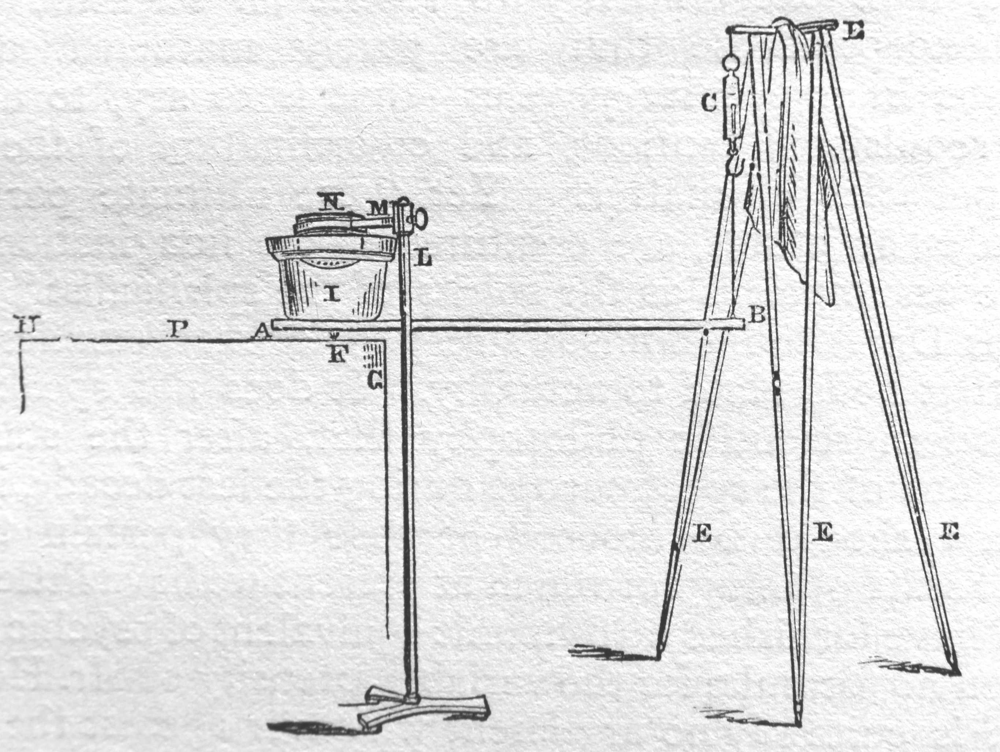

<<< Previous
Next >>>

A mixes truth with delusion in an earnest investigation of a psychic problem * A, mixing truth with delusion in an earnest investigation of a psychic problem, f inally loses his reason **